IntegerExpressionSet output signal to a time varying Integer expression |

|
Information
This information is part of the Modelica Standard Library maintained by the Modelica Association.
The (time varying) Integer output signal of this block can be defined in its parameter menu via variable y. The purpose is to support the easy definition of Integer expressions in a block diagram. For example, in the y-menu the definition "if time < 1 then 0 else 1" can be given in order to define that the output signal is one, if time ≥ 1 and otherwise it is zero. Note, that "time" is a built-in variable that is always accessible and represents the "model time" and that variable y is both a variable and a connector.
Connectors (1)
| y |
Type: IntegerOutput Description: Value of Integer output |
|---|